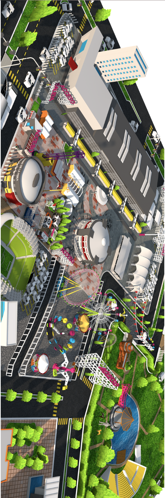

<div class="views no-navbar no-toolbar">
    <!-- Your main view, should have "view-main" class -->
    <div class="view view-main">
        <!-- Top Navbar-->
        <div class="navbar theme-teal" style="background-color:#fe0077">
            <div class="navbar-inner">
              <div class="left sliding">
                <a class="link" href="mapa.html"> </a>
                  
              </div>
            </div>
        </div>
        <!-- Pages container, because we use fixed-through navbar and toolbar, it has additional appropriate classes-->
        <div class="pages ">
            <!-- Page, "data-page" contains page name -->
            <div  class="page" data-page="total">
                <!-- Scrollable page content -->
                <div class="page-content" style="background:url(img/background.jpg); !important;">
                  
                </div>
            </div>
        </div>
    </div>
</div>
  </div>
